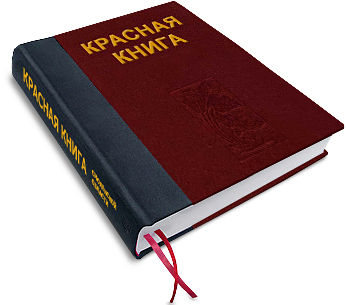
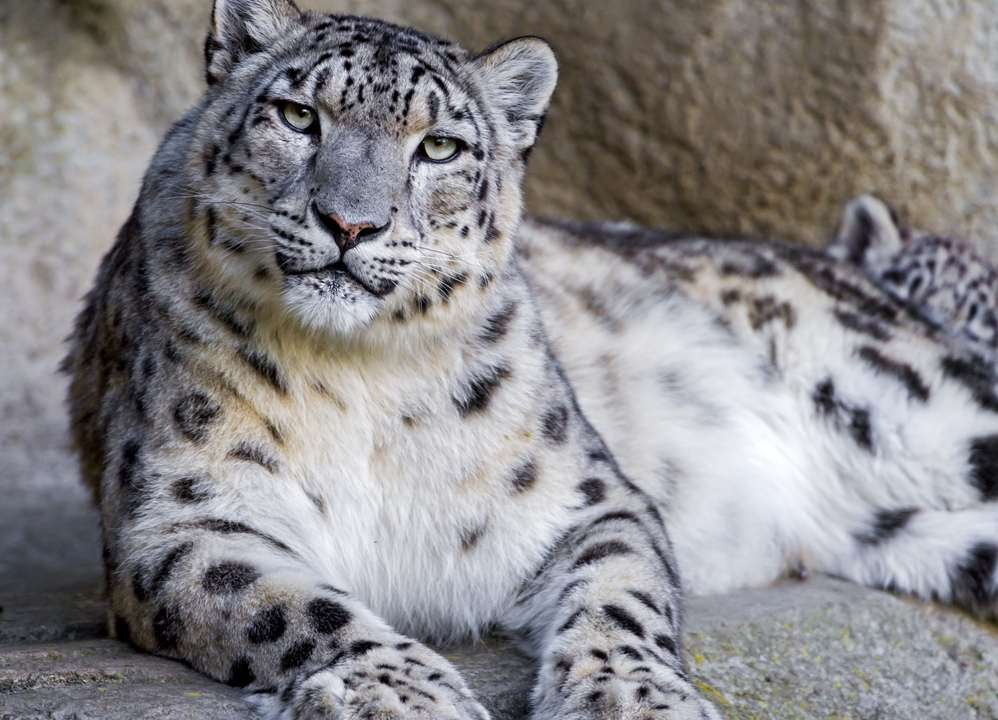
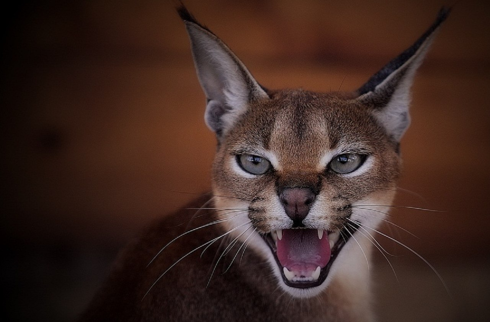
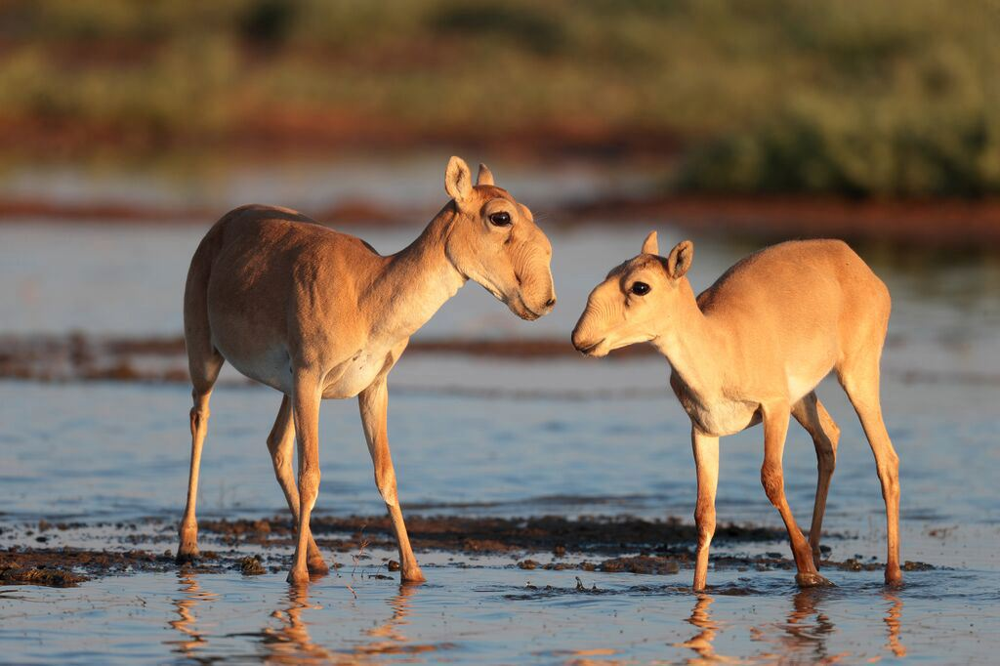

Красная книга

Красная книга - список редких и находящихся под угрозой исчезновения в Казахстане животных, растений и грибов. Насчитывает 3 издания, последнее из которых вышло в 1999 году.
Современное издание включает:
128 видов и подвидов позвоночных
18 рыб и круглоротых
3 земноводных
10 пресмыкающихся
58 птиц
40 млекопитающих

Cнежный барс — символ Казахстана, также занесены в Красную книгу Казахстана. Причины исчезновения все те же: люди и изменение природных условий. Тем не менее снежного барса насчитывается около 200 особей. Что касается рыси, то она встречается еще реже в Заилийском и Джунгарском Алатау, а также в заповедниках.
Каракал.Ее называют степной рысью. Это просто красавица с кисточками на ушах. Встречается в Казахстане чрезвычайно редко и находится под угрозой полного исчезновения.И причиной вымирания как всегда является либо человек с его жадностью, либо погодные условия, приводящие к массовой гибели каракала.

Сайгак – это представитель семейства антилоп. На сегодняшний день этот вид считается исчезающим, находится под охраной и занесён в Красную книгу. В XVII веке сайгаки считались самым многочисленным видом в Евразии, и населяли большую часть пространства Земли.

1
2
3....
s